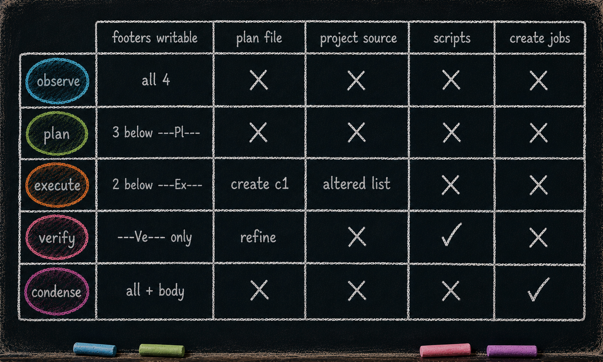

The Discipline and the Map
Essay 6.2 — The Markov Phasic Brain, Part 2 of 10.
Essay 6.1 established the load-bearing claim — phases force separation; separated kinds of thinking produce better thinking. This part draws the full picture: every transition the orchestrator allows, the tool-restriction discipline that makes each phase distinct, and a quick operational map of what each compartment produces before we open them one at a time.
The Full Transition Map
The rim of the cycle has more edges than Essay 5 needed to show. Here is the complete map the orchestrator enforces.
Forward edges fire automatically when the phase-commit script’s gate passes: ⓘ
idle → observe(start a new cycle)observe → planplan → executeexecute → verifyverify → condensecondense → idle(close the cycle)
Backward edges are explicit — the agent chooses where to roll back to: ⓘ
observe → idle(bail — the cycle is preserved, no new cycle is consumed on re-entry)plan → observeexecute → observeorexecute → planverify → execute,verify → plan, orverify → observe(the multi-destination routing — minor fix, design flaw, or context gap, each pointing at a different prior phase)
No backward edge from condense. Once the cycle reaches CONDENSE, the only exit is forward to idle. The brain refuses to un-consolidate. We come back to why in the CONDENSE essay. ⓘ
The gmode side-channel — every phase, including idle, has one extra edge that loops back to itself through gmode. Gmode is short for generic mode. It is the freestyle phase: a deliberately unconstrained mode where none of the OPEVC tool-restriction guards apply, used for work that doesn’t fit the OPEVC ceremony. Why does a system built on constraint ship a way around its own constraints? Because a constraint with no sanctioned exit becomes a cage — and a caged agent invents unsanctioned workarounds; gmode is the one deliberate, friction-gated lane out, so the rare off-pattern job has somewhere to go that isn’t a hack. ⓘ
Entry is the same regardless of which phase the agent came from. The agent writes a [GMODE] prefixed question to the user with a substantive reason — a long-form justification of why the work needs to happen outside the current phase’s compartment (currently a roughly 100-word floor in the prototype). The orchestrator stashes the current phase, the agent enters gmode, and the per-phase guards step aside. ⓘ
Inside gmode the agent can do real work for as long as it needs. Fix a deadlock. Make a small plugin edit that doesn’t merit a full OPEVC cycle. Run a plugin-lock ceremony. The mode is intentionally unopinionated. Exit is explicit (the agent calls a small CLI to leave gmode) and requires a clean git working tree — the same discipline that gates every phase boundary. The home phase is restored atomically; the cycle counter does not advance. ⓘ
How gmode is used is a customization choice. The prototype was built running every job through OPEVC because the work was building the seed agent itself. Once the seed agent ships open-source, users will run their project work through OPEVC and may push routine plugin maintenance through gmode. Or define new phases. Or split phase plugins by job type. Gmode is the general-purpose escape hatch from the prototype’s current ceremony, and the seed-cultivator decides what flows through it. ⓘ
Taken together, the prototype’s full state set names the OPEVC phases (observe, plan, execute, verify, condense) plus idle (the meta-state between cycles) and gmode (the freestyle side-channel). The rest of this essay series opens the OPEVC compartments. Idle and gmode are the bookends. ⓘ
The Discipline Is the Tool Restrictions
A phase is not just a label. It is a different write scope.
OBSERVE and PLAN are read-only. The agent can read any file it likes, but the only files it can write are CLAUDE.md files. Code, scripts, configuration, project content — none of it is editable in those phases. ⓘ
EXECUTE has full write access, scoped to the set of directories OBSERVE and PLAN together declared by editing each one’s CLAUDE.md. ⓘ
VERIFY has scripts-only access. The agent can run tests, run scripts, run validators. It cannot edit code. It can write pass/fail results back into CLAUDE.md and into a designated plan file. ⓘ
CONDENSE has the most permissive but most restricted soft-brain scope: it can write .md files across .claude/ and voice.xml coaching surfaces, but it cannot touch project files or hard plugin code at all. ⓘ
Tool restriction is the pedagogy. The discipline doesn’t come from telling the agent what to do; it comes from making the wrong move impossible inside the current phase — each phase’s compartment forbids the moves that would skip the cognitive work the phase exists to enforce.
The read-only phases pair up. OBSERVE forces the agent to gather context before it can act — no escape into "let me just patch this real quick," because the patch tool isn’t available. PLAN extends the same lock through the design step: the plan must commit fully to a written contract before EXECUTE can begin, because the alternative isn’t there. ⓘ
The other two cuts close the loop on the back half of the cycle. VERIFY’s scripts-only fence makes self-verification through "the code looks fine to me" impossible; only what the scripts say counts. CONDENSE’s .claude/-only fence keeps project work structurally outside consolidation, so the agent can’t sneak a feature in under the cover of brain-tending. ⓘ
Enforcement is layered. A global guard, registered by the orchestrator plugin, fires on every productive tool call (file edits, reads, shell, web fetches). While the focused job is idle, the gate blocks essentially everything — reads, writes, web fetches, general shell — and unlocks only a small allowlist: the job-management CLI, the phase-advancement CLI, the always-on infrastructure scripts that need to keep running, and memory-file edits. Once a phase activates, the global gate exits silently and the per-phase guard for that phase takes over. ⓘ
Every phase publishes its own guard. Every guard is registered unconditionally and self-exits in milliseconds if the focused job’s phase doesn’t match its own; only the guard for the active phase does real work. Each guard inspects every write call against an allowlist, then consults a shared section-check library to ensure the edit doesn’t cross a phase-section boundary inside any CLAUDE.md. ⓘ
The footer markers from the previous essay series — ---Ob---, ---Pl---, ---Ex---, ---Ve--- — are physical barriers. Each phase’s guard enforces one rule: writes must land strictly below that phase’s own marker. The constraint is asymmetric — each phase can write only into its own footer block and the blocks that follow it in the cycle, never the blocks already closed upstream. As the cycle progresses, the editable region shrinks from above: OBSERVE writes anywhere below its marker into all four blocks, PLAN into three, EXECUTE into two, VERIFY into just the last. Each completed phase becomes part of the locked upstream record. The body above all four markers is reserved for CONDENSE; none of the four work-on-project phases can touch it. ⓘ
In practice each phase’s work lands in its own block, but the mechanical rule is the floor — "strictly below my marker" — and that is what produces the forward-pressure. The markers are not decoration; they are the structural manifestation of compartmentalization. The agent can lose the argument with the user, or with itself, but it can’t lose it with the guard. The guard is code.
The result: each phase produces its own kind of artifact. OBSERVE produces working memory. PLAN produces a plan document. EXECUTE produces code changes plus execution notes. VERIFY produces pass/fail results. CONDENSE produces a clean working memory and durable knowledge files. ⓘ
Every phase has its own plugin. The phasic plugins — one per phase, plus a separate orchestrator that tracks which phase is active for which job — are themselves single-concern packages, each one owning the rules for one mode of cognition. As with the always-on layer, the count is the prototype, not the architecture. A custom seed adding a new phase would add a new plugin alongside the orchestrator. The shape is what generalizes. Essay 7 deconstructs the plugin kit; Essay 7.9 walks through a worked example — a hypothetical phase_research plugin slotted between OBSERVE and PLAN, with the two-lock pattern that wires it in. ⓘ

A Quick Map Before We Dive In
Before opening each phase compartment, here is the operational map at a glance. Each line below names the phase, its essence, and what it is on the hook to produce.
IDLE — the meta-state between cycles. Lifecycle management only — a narrow allowlist opens, and everything else stays shut. ⓘ - Unlock the job-management CLI — the lifecycle surface (show, focused, list, update, activate, focus, pause, complete, approve). Creation and graph mutations live elsewhere. - Unlock the phase CLI (advance, current, cycle, exit-gmode) — agent-callable advance only goes idle → observe - Keep the always-on infrastructure running: memory-file edits, plus a small named-script allowlist on the IDLE Bash gate — interaction_summary/scripts/summary.sh for cross-conversation summaries, brain_guard/scripts/self-compact.sh for context-window compaction, and plugin_integrity/scripts/lock-cmd.sh for the universal active-lock close-out. Every other shell command exits blocked. ⓘ - Block reads, project edits, CLAUDE.md edits, web access, general shell - Job creation happens automatically: top-level via prompt-handler.sh (the user’s prompt itself creates the job when none is focused); dependent jobs via CONDENSE step 3 consuming [PENDING-JOB] markers. The agent does not call job.sh create itself.
OBSERVE — gather context before any plan can form. ⓘ - On cycle 1, expand the job’s objective from its short creation stub into a full statement of intent — OBSERVE’s distinctive cycle-1 work; the Stage decision (whether PLAN names a plan_file) is made next, in PLAN - Populate the working-memory CLAUDE.md files with relevant context - Dispatch parallel research subagents and synthesize their returns - Refuse code edits — the only allowed write target is CLAUDE.md - Cross the exit threshold only after enough investigation has happened
PLAN — turn observations into a binding contract. ⓘ - Name the plan_file in cycle 1 (multi-cycle jobs only); PLAN itself never writes the file — EXECUTE creates it - Declare the altered list — the set of dirs whose CLAUDE.md the agent edited during OBSERVE or PLAN; EXECUTE will be allowed to write project files inside each of those dirs exactly (no ancestor or nested dirs) - Write acceptance criteria VERIFY will check against - Refuse code edits — the contract is what gets written, not the work
EXECUTE — build what the plan declared, in checkpoints. ⓘ - Edit project files, but only inside the altered list — the merged set of CLAUDE.md files OBSERVE and PLAN together declared, frozen at execute entry - Materialize every artifact the seed agent produces — code, the .md plan in cycle 1 of a Stage-2 job, the .yaml plan in cycle 1 of a Stage-3 job, anything else with a path; EXECUTE is the universal file-creator - Favor small, focused checkpoint commits over one long uncommitted run; the point schedule and intermediate-commit mode incentivize the checkpoint pattern - Capture execution notes in the working CLAUDE.md so the cycle stays narratable - Delegate file work to execute subagents (sequential by default, a small in-flight ceiling); keep the main session on the spine
VERIFY — judge prior work with independent eyes. ⓘ - Run scripts and validators; refuse all code edits in this phase - Dispatch auditor subagents to read the executed work without bias - Write pass/fail results into CLAUDE.md and the plan file - Refine the focused job’s plan file (.md or .yaml) — but editing it blocks forward-advance and forces a backward step to PLAN; the plan is refined in place and persists, nothing is approved or sealed - Hand completion to CONDENSE — VERIFY has no plan-approval or job-completion authority; [JOB-COMPLETE] is a CONDENSE-only ceremony, a phase away - Remove a dependency from the focused job’s depends_on (job.sh remove-dependency) when the audit reveals the dep is no longer needed — the lifecycle-symmetry partner of CONDENSE’s add-dependency - Route the cycle forward to CONDENSE, or backward to whichever prior phase the failure points at
CONDENSE — consolidate the cycle’s learnings into the brain. ⓘ - Walk a strict staged waterfall that routes content to its durable home - Consume marker types the prior phases dropped into footers - Compress the working CLAUDE.md back to a clean state - Own all job creation (create, create-dependent) and dependency additions (add-dependency) — the phase with the right cycle-wide context for graph mutations - Lock forward to idle; no escape hatch back to verify
GMODE — the freestyle side-channel from any phase. ⓘ - Enter via a [GMODE] user question with a substantive reason (currently a roughly 100-word floor in the prototype) - Run unconstrained work — no OPEVC tool-restriction guards apply - Exit explicitly with a clean git tree; the home phase resumes atomically - Host work that doesn’t fit the OPEVC ceremony — deadlock fixes, plugin maintenance, custom workflows
That is the operational shape. The rest of this essay series opens each phase one at a time and explains what makes its compartment work.
What you would customize
The discipline is the architecture; the specific edges and the specific allow-lists are this prototype’s calibration. Several surfaces are open to the next architect.
The architect would tune the backward map. The prototype lets verify roll back to several destinations — execute, plan, or observe — picked by the failure shape. A seed that runs short, surgical cycles might collapse the menu to one (always observe; let the next cycle re-plan from scratch). A seed running long structural sweeps might widen the menu to include condense for re-routing learnings without re-executing. ⓘ
The architect would tune the gmode usage policy. Gmode is the freestyle escape hatch; the prototype reserved it for plugin maintenance because the prototype was building the seed agent itself. A user-facing seed might keep almost all work inside OPEVC and never enter gmode. A research-heavy seed might push routine literature scans through gmode rather than inflating every cycle’s observe phase. ⓘ
The architect would tune the per-phase tool allow-lists. The current cuts — read-only in observe and plan, scripts-only in verify, full-write-inside-scope in execute, brain-only in condense — encode this prototype’s notion of cognitive separation. A seed wanting a stricter observe could ban the web entirely. A seed wanting a looser verify could allow targeted code edits inside named directories. The guards are code; the cuts are decisions. ⓘ
What the architect would not customize is the rule that each phase publishes its allow-list and the guard enforces it against every tool call. The principle is the floor: a phase whose restrictions are advisory is not a phase. ⓘ
The shape lifts off the prototype into work that has nothing to do with seed agents. A patent attorney shaping a prior-art-review seed could compartment the work into pull-references, extract-claim, cross-check, and draft-opinion phases — each with its own tool fence, each with its own write scope — and the transition map would refuse a draft-opinion → pull-references slide that smuggles unverified prior art into the brief.
The discipline here is friction, not mathematical enforcement: every guard depends on the agent reading and obeying the injected voice, and the slow-downs (counters, point gates, the substantive-reason floor) buy the operator the time to intervene before a bypass admits. Gmode is the documented escape hatch — the seed agent can route around the OPEVC ceremony when the work genuinely needs it, and the cost is the long-form justification that surfaces the bypass to the operator.
The transition map is the what; the tool restrictions are the how. Together they form the discipline. The next essay opens the first compartment — OBSERVE, the read-wide-write-once entry phase that decides what the rest of the cycle will work on.
Essay 6.2 — The Markov Phasic Brain, Part 2 of 10.
Previous: Essay 6.1 — Phasic Foundation — the load-bearing claim and the cycle’s outer Markov shape. Next: Essay 6.3 — OBSERVE — Read Wide, Write Once — the entry phase, the multiplier sentinel, and the read-before-write gates.
Comments